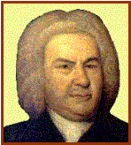

Johann Sebastian BACH

|
Nace: 21-marzo-1685 en Eisenach (Alemania) |
Muere: 28-julio-1750 en Leipzig (Alemania) |
||
|
 |
Es el menor de 8 hermanos y
desciende de una familia de músicos. Queda huérfano a los nueve años
y se queda a cargo de su hermano mayor Johann Christoph, organista que amplia
su educación musical. Con 15 años formaba parte del coro del convento St.
Michael en Lüneburg. A partir de 1703 es organista y maestro de coro en
Arnstadt. Posteriormente ocupa el puesto de organista en Blasiuskirche, donde
se casó en 1707 con María Barbara Bach. En 1708 obtiene plaza de organista en
la corte del duque de Weimar y en 1717 maestro de conciertos del duque. Pero
cuando se le negó la plaza de maestro de capilla del duque, fue admitido en
la corte del príncipe Leopold de Anhalt-Cöthen. En 1720 muere su esposa y al
año siguiente se casa con Anna Magdalena Bach. En 1723 fue nombrado cantor de
la iglesia de St. Thomas de Leipzig y en 1730 director del Collegium Musicum.
Se retira en el 1741 con un principio
de ceguera pero con el calor de su familia. |
Obras principales: Para
teclado: -El
clave bien temperado: 48 Preludios y fugas, BWV 846-93: Preludio Nº 1 en Do, Op. 846. -Variaciones
Goldberg, BWV 988: Var. 1. -Fantasía
y fuga en La menor, BWV 904. -Concierto
Italiano, BWV 971.(Allegro;
Largo; Presto) Para
Órgano: -Toccata y fuga en Re menor, BWV 565. -Toccata y fuga en Mi, BWV 566. -Fantasía y fuga en Do menor, BWV 537. -Preludio
y fuga en La menor, BWV 543. Para
orquesta: -6
Conciertos de Brandenburgo, BWV
1046-51: Escucha
el Allegro del Nº 1, Op.1046. -Suite
Nº 1, Nº 2, Nº 3 y Nº 4, BWV
1066-69. Coral: -Pasión
según San Mateo, BWV 244. Escucha este fragemento: Gerne
will dir ich mich bequemen. -Pasión
según San Juan, BWV 245. -Magnificat
en Re, BWV 243. -Oratorio
de Navidad, BWV 248. Otras
obras: -Sonatas
para flauta, BWV 1013/20/31-34. -El
arte de la fuga, BWV 1080. -La
ofrenda musical, BWV 1079. -El
pequeño libro del órgano, BWV 599-644
|
|
|
Podemos encuadrar a
este autor dentro del BARROCO
|
|||